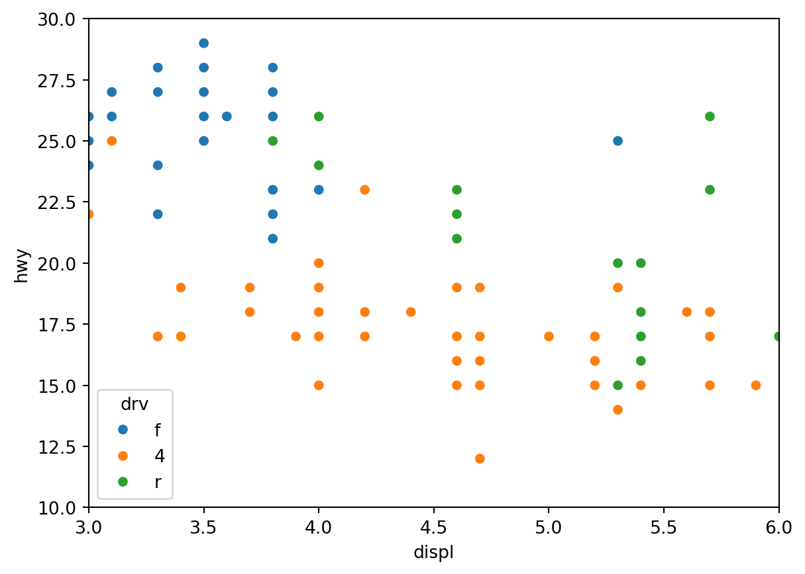
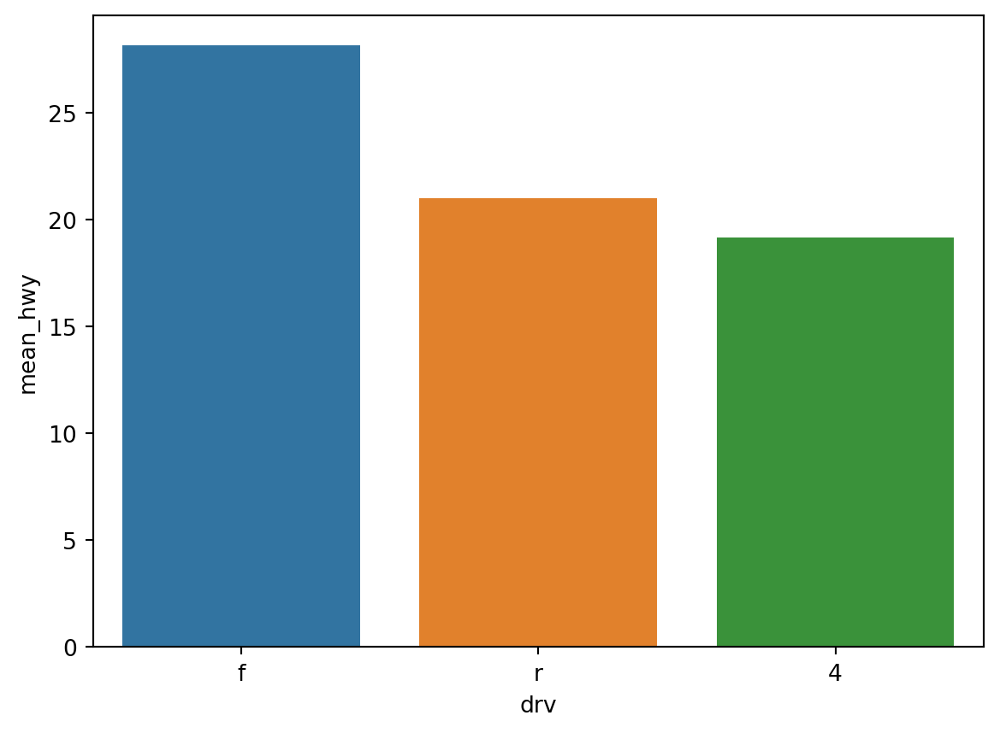

import pandas as pd
mpg = pd.read_csv('C:/Users/USER/Documents/LS빅데이터스쿨/lsbigdata-project1/data/mpg.csv')
mpg.head()
mpg.shape(234, 11)
import pandas as pd
mpg = pd.read_csv('C:/Users/USER/Documents/LS빅데이터스쿨/lsbigdata-project1/data/mpg.csv')
mpg.head()
mpg.shape(234, 11)!pip install seaborn
!pip install plotly.express
import seaborn as sns
import matplotlib.pyplot as plt
import plotly.express as pxRequirement already satisfied: seaborn in c:\ds\python\python312\lib\site-packages (0.13.2)
Requirement already satisfied: numpy!=1.24.0,>=1.20 in c:\ds\python\python312\lib\site-packages (from seaborn) (2.0.0)
Requirement already satisfied: pandas>=1.2 in c:\ds\python\python312\lib\site-packages (from seaborn) (2.2.2)
Requirement already satisfied: matplotlib!=3.6.1,>=3.4 in c:\ds\python\python312\lib\site-packages (from seaborn) (3.9.1)
Requirement already satisfied: contourpy>=1.0.1 in c:\ds\python\python312\lib\site-packages (from matplotlib!=3.6.1,>=3.4->seaborn) (1.2.1)
Requirement already satisfied: cycler>=0.10 in c:\ds\python\python312\lib\site-packages (from matplotlib!=3.6.1,>=3.4->seaborn) (0.12.1)
Requirement already satisfied: fonttools>=4.22.0 in c:\ds\python\python312\lib\site-packages (from matplotlib!=3.6.1,>=3.4->seaborn) (4.53.1)
Requirement already satisfied: kiwisolver>=1.3.1 in c:\ds\python\python312\lib\site-packages (from matplotlib!=3.6.1,>=3.4->seaborn) (1.4.5)
Requirement already satisfied: packaging>=20.0 in c:\ds\python\python312\lib\site-packages (from matplotlib!=3.6.1,>=3.4->seaborn) (24.1)
Requirement already satisfied: pillow>=8 in c:\ds\python\python312\lib\site-packages (from matplotlib!=3.6.1,>=3.4->seaborn) (10.4.0)
Requirement already satisfied: pyparsing>=2.3.1 in c:\ds\python\python312\lib\site-packages (from matplotlib!=3.6.1,>=3.4->seaborn) (3.1.2)
Requirement already satisfied: python-dateutil>=2.7 in c:\ds\python\python312\lib\site-packages (from matplotlib!=3.6.1,>=3.4->seaborn) (2.9.0.post0)
Requirement already satisfied: pytz>=2020.1 in c:\ds\python\python312\lib\site-packages (from pandas>=1.2->seaborn) (2024.1)
Requirement already satisfied: tzdata>=2022.7 in c:\ds\python\python312\lib\site-packages (from pandas>=1.2->seaborn) (2024.1)
Requirement already satisfied: six>=1.5 in c:\ds\python\python312\lib\site-packages (from python-dateutil>=2.7->matplotlib!=3.6.1,>=3.4->seaborn) (1.16.0)
Requirement already satisfied: plotly.express in c:\ds\python\python312\lib\site-packages (0.4.1)
Requirement already satisfied: pandas>=0.20.0 in c:\ds\python\python312\lib\site-packages (from plotly.express) (2.2.2)
Requirement already satisfied: plotly>=4.1.0 in c:\ds\python\python312\lib\site-packages (from plotly.express) (5.22.0)
Requirement already satisfied: statsmodels>=0.9.0 in c:\ds\python\python312\lib\site-packages (from plotly.express) (0.14.2)
Requirement already satisfied: scipy>=0.18 in c:\ds\python\python312\lib\site-packages (from plotly.express) (1.14.0)
Requirement already satisfied: patsy>=0.5 in c:\ds\python\python312\lib\site-packages (from plotly.express) (0.5.6)
Requirement already satisfied: numpy>=1.11 in c:\ds\python\python312\lib\site-packages (from plotly.express) (2.0.0)
Requirement already satisfied: python-dateutil>=2.8.2 in c:\ds\python\python312\lib\site-packages (from pandas>=0.20.0->plotly.express) (2.9.0.post0)
Requirement already satisfied: pytz>=2020.1 in c:\ds\python\python312\lib\site-packages (from pandas>=0.20.0->plotly.express) (2024.1)
Requirement already satisfied: tzdata>=2022.7 in c:\ds\python\python312\lib\site-packages (from pandas>=0.20.0->plotly.express) (2024.1)
Requirement already satisfied: six in c:\ds\python\python312\lib\site-packages (from patsy>=0.5->plotly.express) (1.16.0)
Requirement already satisfied: tenacity>=6.2.0 in c:\ds\python\python312\lib\site-packages (from plotly>=4.1.0->plotly.express) (8.5.0)
Requirement already satisfied: packaging in c:\ds\python\python312\lib\site-packages (from plotly>=4.1.0->plotly.express) (24.1)
[notice] A new release of pip is available: 24.0 -> 24.2
[notice] To update, run: python.exe -m pip install --upgrade pip
[notice] A new release of pip is available: 24.0 -> 24.2
[notice] To update, run: python.exe -m pip install --upgrade pipscatter() 사용하기sns.scatterplot(data=mpg,
x="displ",
y="hwy",
hue="drv") \
.set(xlim = [3,6], ylim = [10,30])
px.scatter(data_frame = mpg,
x='displ', y='hwy', color='drv')barplot() 사용하기df_mpg = mpg.groupby("drv", as_index = False) \
.agg(mean_hwy = ('hwy','mean'))
df_mpg| drv | mean_hwy | |
|---|---|---|
| 0 | 4 | 19.174757 |
| 1 | f | 28.160377 |
| 2 | r | 21.000000 |
sns.barplot(data = df_mpg.sort_values("mean_hwy", ascending = False),
x = 'drv', y = 'mean_hwy', hue = 'drv')
px.bar()를 이용한 막대 그래프 만들기df = mpg.groupby('category', as_index = False) \
.agg(n = ('category', 'count'))
df| category | n | |
|---|---|---|
| 0 | 2seater | 5 |
| 1 | compact | 47 |
| 2 | midsize | 41 |
| 3 | minivan | 11 |
| 4 | pickup | 33 |
| 5 | subcompact | 35 |
| 6 | suv | 62 |
px.bar(data_frame = df, x = 'category', y = 'n', color = 'category')px.line()를 이용한 선 그래프 만들기economics = pd.read_csv('C:/Users/USER/Documents/LS빅데이터스쿨/lsbigdata-project1/data/economics.csv')px.line(data_frame = economics, x = 'date', y = 'psavert')